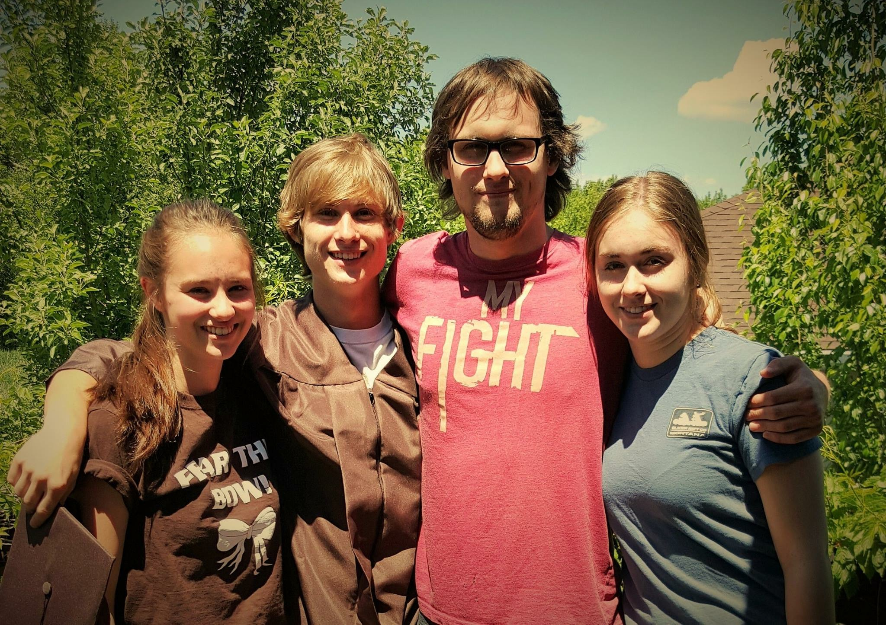
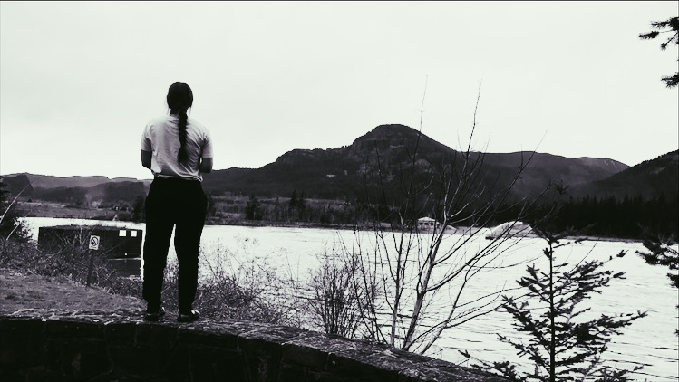
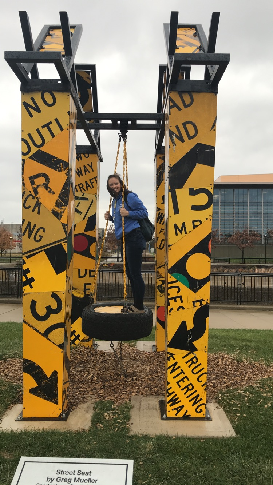

American photographer, Paul Caponigro once said, “It’s one thing to make a picture of what a person looks like, it’s another thing to make a portrait of who they are,” photography is a visual of how an individual interprets the world. To me, taking photos allows others to see your vision and how I comprehend an experience. I utilize my camera to analyze different people, and how society shapes them. Often my favorite photos are black and white, because they convey a sense of mystery and enigma. If my photos can evoke a reaction with the subject’s emotions, then they can be a visual behind the true meaning of each photo.
It is important that my work is consistent and inhibits similar designs. Even though they are separate people, everyone is connected and undergoes similar experiences. Everyone has different upbringings, but everyone has been shaped by society and that is reflected in their personality. Capturing this personality is an important aspect of my photography, catching someone in their own world can show more than any staged photo. Photography makes me feel that there is allows more to learn about someone and their mystery or story is reflected.
My hope, is that my photos can induce a response from someone and clearly reflect the subjects past, present, and future. Perhaps the audience can relate to the subject.


My Bio

Hello! Welcome to my Bio, my name is Tracy Ackeret. I was born and raised in Helena, Montana. Growing up a played a lot of sports, basketball, soccer, and so forth, but I ended up loving dance and cheer the most. I am a freshman at Carroll College. My major is English Writing and my minor is Social Media.
Sophomore year of high school is when my love for photography began to develop. After taking two years of photography classes, I found myself enjoying using photoshop and taking pictures of my friends. This website is to show the favorite photos that I have taken and my information.
"It's one thing to make a picture of what a person looks like, it's another thing to make a portrait of who they are"-Paul Caponigro.